Chapter 11 — Petroleum Traps
Migration delivers hydrocarbons; traps decide whether they stay. Learning trap families—and that timing and seal matter as much as shape—is how you read why one well is a discovery and the next is a duster.
Learning goals
- Classify traps as structural, stratigraphic, or combination.
- Explain anticlines, sealing faults, growth faults/rollovers, and tilted blocks.
- Contrast primary vs secondary stratigraphic traps.
- Describe bald-headed structures and salt-dome play types.
Trap families
A trap gathers oil/gas into part of a reservoir. Three families:
- Structural — beds deformed after deposition (fold or fault).
- Stratigraphic — built by deposition or erosion (primary vs secondary).
- Combination — both structure and stratigraphy.
One-liner: structural = the layer moved; stratigraphic = it was deposited or eroded that way; combination = both (bald head, salt, etc.). Oil always goes to the highest point the seal allows.
Structural traps
Anticline / dome
Beds arch; oil rises to the crest. Many anticlines are asymmetric: the surface crest may not sit above the deep crest—so an “on-structure” surface location can still hit water. Folding often cuts sealing faults through the structure.
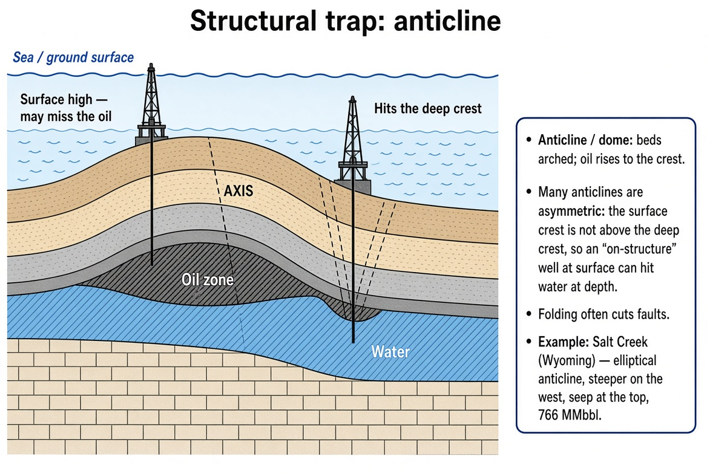
Sealing fault
A fault that does not allow fluid across. It compartments an anticline: producing one side may not deplete the other. Clues: OWC/GOC at different elevations across the fault, or mismatched pressures at the same depth. In soft delta/coastal shale, clay smear on the fault plane often makes the seal.
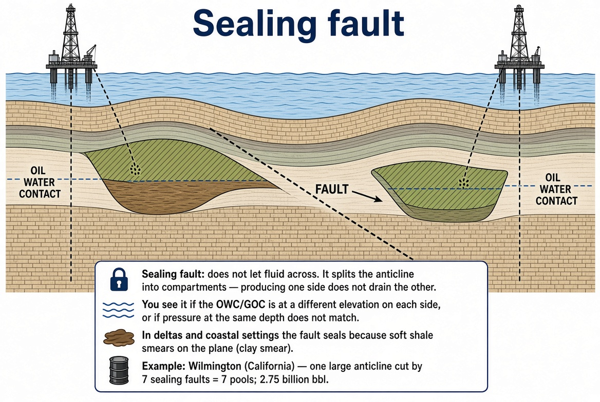
Growth / down-to-the-basin fault
Delta/coastal faults form when loose sediment loads rapidly. They run roughly parallel to the beach, a bit inland. Basin-side hanging wall drops (a giant slump). Movement while deposition continues (“growth”) thickens the downthrown side. The fault plane is curved (listric)—steep up top, flatter at depth as sediment compacts.
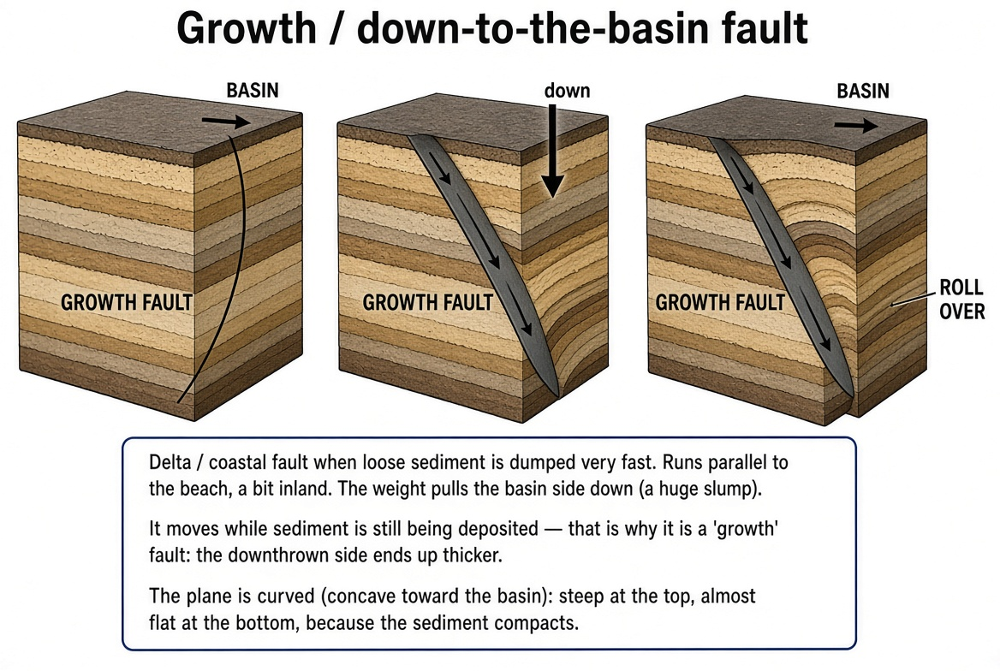
Rollover anticline
As a curved growth fault moves, space opens near surface; loose basin-side sediment collapses into it and forms a ridge—the trap. Common on Gulf Coast, Mississippi, Niger systems. Secondary faults often segment the rollover into small reservoirs. As the shoreline progrades, older growth faults die and get buried.
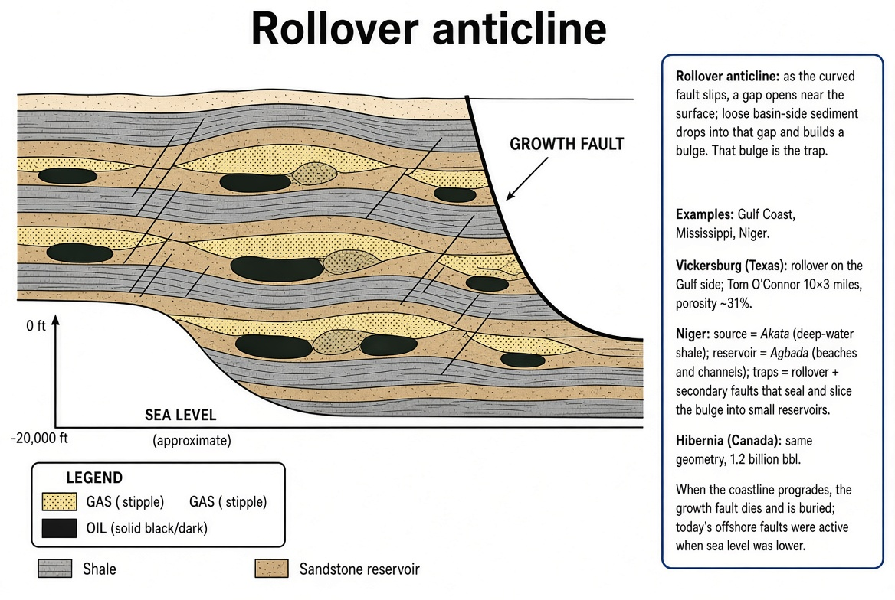
Drag fold
Beds wrinkle against a fault from friction—one wall up, one down. In compressional mountains, thrusts in overthrust belts create drag folds. Surface expression may not reveal the subsurface fold—good seismic is required.
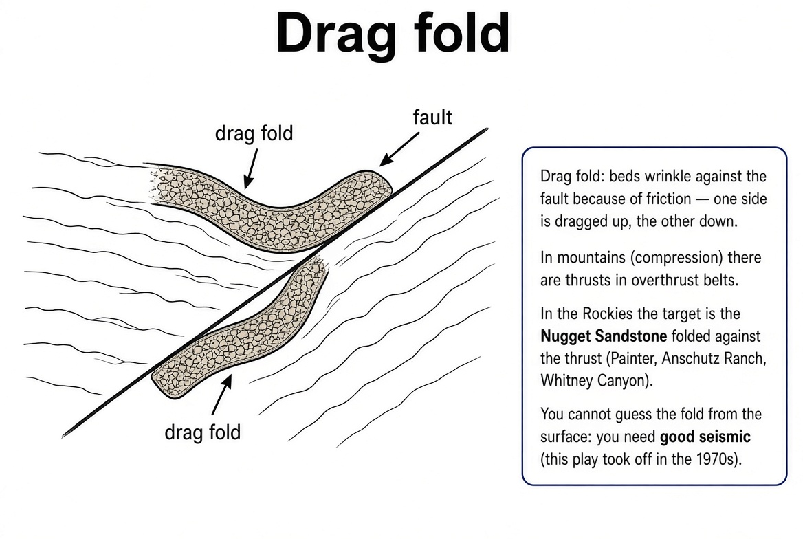
Tilted fault block
Flat beds break on normal faults into tilted blocks; sea later buries them with shale/salt (seal). Oil migrates up the reservoir to a sealing fault or caprock.
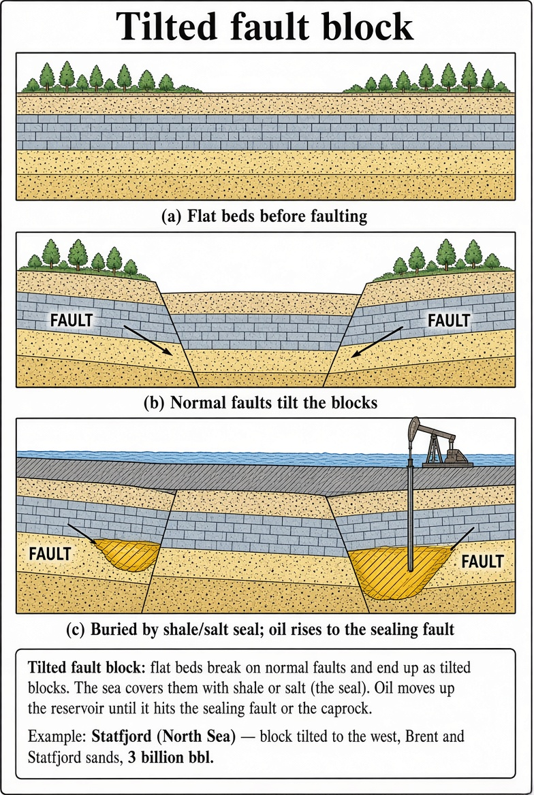
Stratigraphic traps
Secondary — angular unconformity
Reservoir is truncated under an erosion surface with seal above. Giant examples exist where early anticline wildcats were dry (oil had already passed) and later wells on the unconformity found the pay underneath.
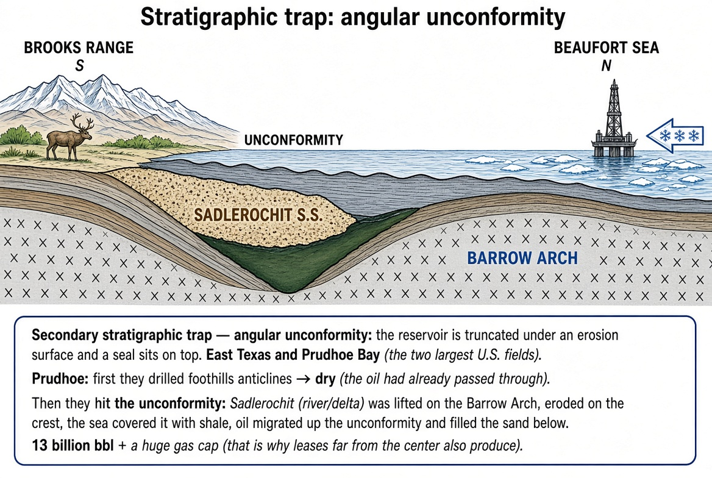
Primary — reef
Reef encased in shale/salt. Sometimes a gentle compaction anticline forms above: the reef is stiff while flanking sediments compact more, leaving a soft high over the reef. Tiny pinnacles may be only tens of acres—easy to miss without 3D.
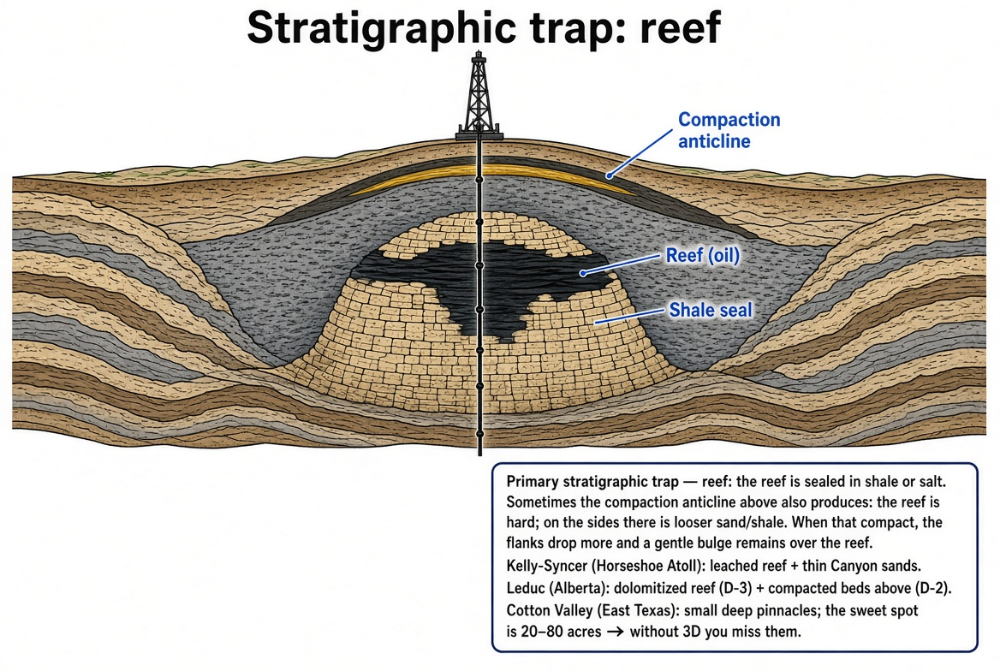
Primary — river channel / incised valley
Sea level falls, river cuts a valley; sea rises, valley fills with sand; shale above seals.
Primary — beach / buttress sands
Beach sand deposited on an unconformity as sea level rises. Some giant fields produce from thin but areally huge beach/conglomerate sheets—sometimes found while aiming at something else.
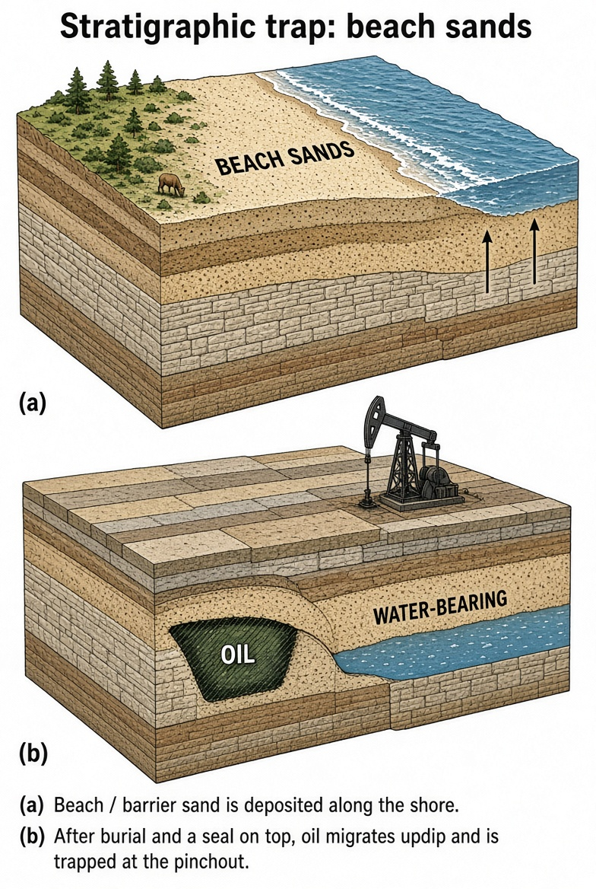
Combination traps
Combination means structure + stratigraphy together.
Bald-headed structure
An anticline/dome forms, then the crest erodes away the top reservoir; sea covers with unconformity + seal. Oil remains on the flanks; the “bald” crest does not produce the main pays.
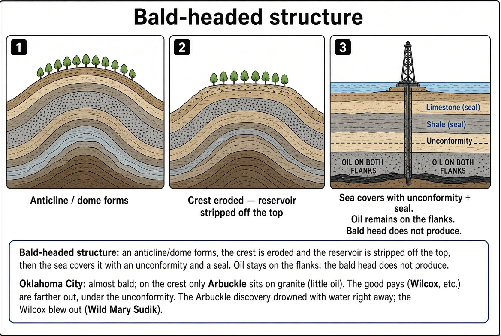
Salt dome
Deep salt flows as a viscous solid, pierces overlying beds (piercement) because overburden squeezes it and salt is buoyant. Water dissolves halite; insoluble anhydrite caprock (tens to hundreds of meters) may remain—sometimes fractured and vuggy enough to produce. Surface may show a mound.
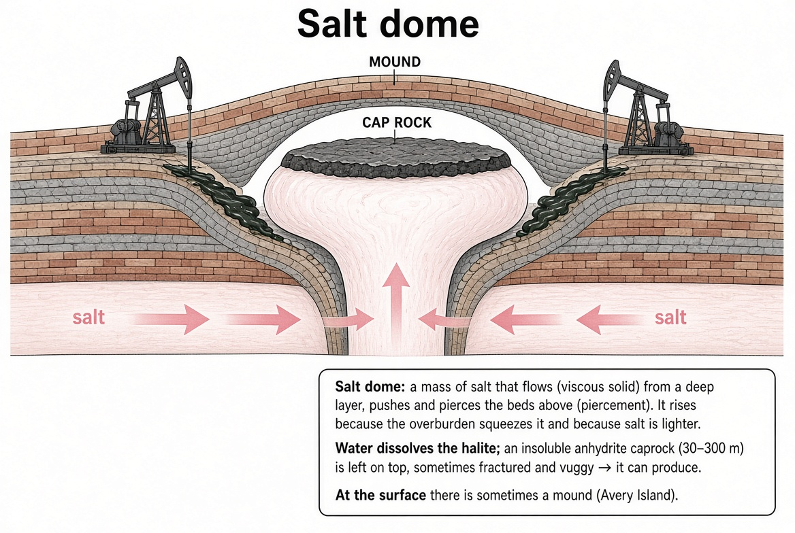
Play types around one plug: (1) arched sands above the plug, (2) faults/grabens near the top, (3) porous caprock, (4) reservoirs pinched against salt on deep flanks, (5) sands under a salt overhang. One dome can host many reservoirs. North Sea chalk over salt may have high porosity with permeability mainly from salt-induced fractures.
Key terms
- Structural trap
- Fold or fault geometry after deposition.
- Stratigraphic trap
- Depositional or erosional seal geometry.
- Sealing fault
- Fault that blocks fluid flow; creates compartments.
- Growth fault
- Syn-depositional, often listric coastal/delta fault.
- Rollover anticline
- Hanging-wall fold into a growth fault.
- Bald-headed structure
- Eroded crest; pay on flanks under unconformity.
- Salt dome
- Piercing salt plug with multiple trap styles.